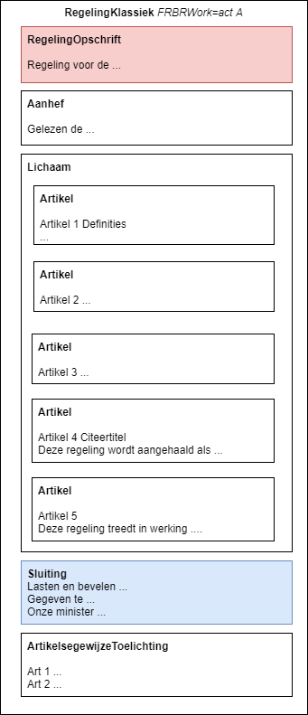

RegelingKlassiek
Een RegelingKlassiek is een regeling volgens het zogenoemde klassieke model. Dat is de opbouw voor "algemeen geldende voorschriften" die worden gemaakt en gewijzigd door het BG (voornamelijk het Rijk). Deze (ontwerp)voorschriften worden gepubliceerd en geconsolideerd op platformen als wetten.nl en ook in DSO-LV. Een RegelingKlassiek kent alleen de artikelstructuur.
Structuur van een RegelingKlassiek
Een RegelingKlassiek heeft als root-element RegelingKlassiek. Het diagram hieronder geeft een eenvoudig voorbeeld van een RegelingKlassiek met een beperkt aantal artikelen. Het FRBRWork is act A. Dit voorbeeld heeft geen wijzigartikelen, maar wel een artikelsgewijze toelichting bij de artikelen.

Het type onderdeel (in XML: elementnaam) wordt vet gegeven; de tekst van het onderdeel wordt zonder opmaak afgebeeld.
Onderdelen van een RegelingKlassiek
Het IMOP-schema kent om historische redenen ruime modellen. Zo staat het schema bepaalde onderdelen optioneel toe in zowel BesluitKlassiek als RegelingKlassiek. De voorkeurscodering wordt in de volgende secties in meer detail besproken.
Lichaam
Het lichaam van een RegelingKlassiek bevat de voorschriften, geschreven als artikelen. Deze artikelen kunnen worden verdeeld over structuurelementen zoals Hoofdstuk en Paragraaf.
Een regeling bevat volgens Aanwijzing 4.14 een of meerdere inwerkingtredingsbepalingen. Dit wil overigens niet zeggen dat de regeltekst altijd de exacte inwerkingtredingsdatum geeft; deze kan apart bekend worden gemaakt.
Bovenstaand voorbeeld bevat een consolideerbare artikelsgewijze toelichting. In de huidige praktijk (bij het Rijk) worden deze toelichtingen meestal niet toegevoegd aan regelingen. Als er geen toelichting aan een regeling is toegevoegd, zal deze toelichting ook niet geconsolideerd kunnen worden en daarmee ontbreken op wetten.nl en DSO-LV. Het is de verwachting dat deze toelichtingsmogelijkheid in de toekomst wel gebruikt gaat worden. Daarnaast voegt het Rijk wel vaak toelichtingen toe aan besluiten.
RegelingOpschrift
Creatie van RegelingOpschriften
Een RegelingKlassiek moet worden voorzien van een RegelingOpschrift. Het in rood gegeven RegelingOpschrift geeft de "titel van de regeling". Voor de RegelingKlassiek zijn er twee situaties te onderkennen voor het RegelingOpschrift. In elk van deze situaties wordt het RegelingOpschrift verschillend ingevuld.
| Opschrift van | Vulling | Voorbeeld |
|---|---|---|
RegelingKlassiek met citeertitelbepaling | Het regelingopschrift is (een variant van) de citeertitel zoals het BG deze heeft vastgesteld in een citeertitelbepaling volgens Aanwijzingen paragraaf 4.5. De citeertitel wordt in een van de artikelen van de regeling gegeven als "Deze regeling wordt aangehaald als ..." STOP schrijft niet voor dat software de citeertitelbepaling moet kunnen lezen en begrijpen. Daarom wordt de citeertitel ook opgenomen worden als RegelingOpschrift van de RegelingKlassiek. | |
RegelingKlassiek van een (wijzigings)regeling zonder citeertitelbepaling | Volgens Aanwijzing 4,24 heeft een wijzigingsregeling geen citeertitel. Het opschrift vermeldt daarom de naam van de regeling(en) die gewijzigd worden en een samenvatting van de reden van wijziging. |
Aanhef en sluiting
De Aanhef bevat een beschrijving van de considerans en de grondslagen van de regeling van de initiële versie.
De blauw gekleurde Sluiting geeft typisch aspecten van de regeling die in de "concept-regelingversie" nog niet bekend zijn, zoals de datum bekendmaking en datum ondertekening.
De aanhef en sluiting van elke RegelingKlassiek (initieel of wijziging) wordt geschreven zoals de Aanwijzingen paragraaf 4.2, 4.3, 4.7 en 4.8 voorschrijven.
Consolidatie van aanhef en sluiting
Aanwijzing voor de regelgeving 6.7 stelt dat de aanhef (na bekendmaking) niet wordt gewijzigd. De toelichting stelt:
"Het opschrift en de aanhef van een regeling vormen met het slotformulier het deel van de regeling dat een eenmalige, aan het tijdstip van totstandkoming gebonden, betekenis heeft".
Ook de sluiting wijzigt niet. Dit betekent dat in consolidatie van RegelingKlassiek bij elke regelingversie de als eerste bekend gemaakt versie van de aanhef en sluiting wordt opgenomen.